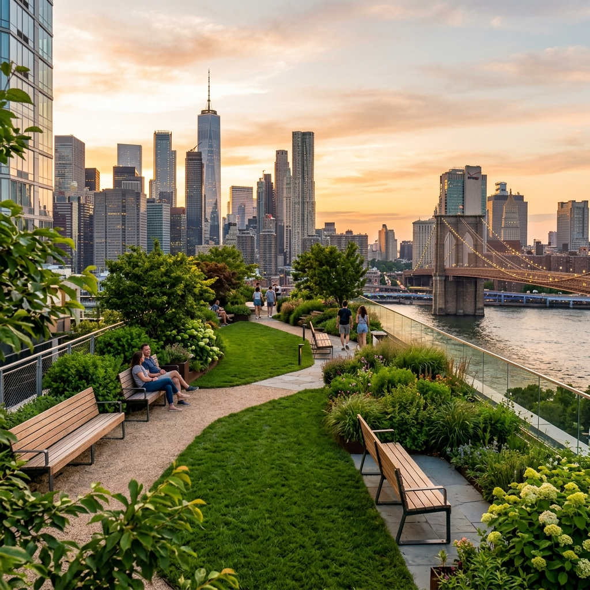

The Financial Sanctuary: The Elevated Acre

Imagine standing in the center of the world's most frantic financial engine, and finding a meadow. The Elevated Acre is a hidden park tucked between skyscrapers.
📍 Teleport to 55 Water StVintage Soul: Barcade
At Barcade, the story is one of nostalgia—sipping craft beer while defending a high score on an 80s arcade cabinet. High-end craft beer meets vintage gaming consoles.
📍 Teleport to 148 W 24th StThe Paper Cathedral: The Morgan Library
To enter Pierpont Morgan’s private library is to step into a fairy tale. It’s a place of hushed, gilded beauty that reminds us that we still cherish the treasures of the past.
📍 Teleport to 225 Madison Ave